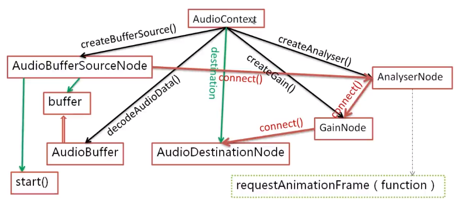

总体分为4个部分，比较常用的基础。
HTML
### 标签基础块: div, form, h1-h6, menu, ul, ol, p, section, nav, article, aside
行内: a, br, em, img, input, label, select, span, strong, textarea
全局属性
- id：元素的唯一id | text
- class：元素的一个或多个类名 | text
- style：元素的行内css样式
- title：有关元素的额外信息 | text
- data-*：存储页面或应用程序的私有定制数据 | text
- contenteditable：元素内容是否可编辑 | bool
- draggable：元素是否可拖动 | bool
- hidden：元素是否隐藏 | bool
- dir：元素中内容的文本方向 | rtl(ltr)
head
- DOCTYPE：声明文档类型，标准模式还是混合模式，按照HTML4.0.4还是HTML最新标准渲染
- meta：元数据
- charset：字符编码，汉字UTF-8
- http-equiv：改变服务器和用户引擎渲染行为的编译
- name：页面设置，SEO
- application-name, author, description, keywords
- viewport：移动端页面宽高适配及用户行为
- width：设置layout viewport的宽度，“width-device”设置为ideal viewport的宽度
- initial-scale：设置页面初始缩放值
- minimum-scale：允许用户最小缩放值
- maximum-scale：允许用户最大缩放值
- user-scalable：是否允许用户缩放
- CSS加载
link是HTML方式，@import是CSS方式link最大限度支持并行下载，@import过多嵌套导致串行下载，出现FOUClink可以通过rel="alternate stylesheet"指定候选样式- 浏览器对
link支持早于@import，可以使用@import对老浏览器隐藏样式 @import必须在样式规则之前，可以在css文件中引用其他文件
语义化
- html语义化：使用包含语义的标签标示文档结构
- body定义主节段，section, article, aside, nav等显式定义节段，可嵌套
- 每个节段内部，使用好h1-h6，div等隐式定义节段
- 导航节段nav，侧边节段aside
- 正文大纲之外，引用blockquote, figure， 检索details，分组fieldset等为独立大纲
- css语义化： 使用有意义的class，id补充未表达的语义
- 优势
- 页面结构清晰
- 利于持续更新及维护
- 利于搜索引擎抓取，收录
- 利于盲人阅读
渐进增强/优雅降级
- 渐进增强：首先保证所有人都能访问的基本实现完备，再逐渐针对高性能用户提供更好的用户体验
- 优雅降级：以完全实现设计要求为目标，对低性能用户进行适配
img：行内元素，不受同源策略影响
- title：图片的建议信息
- alt：图片未加载时的占位提示信息
HTML 5 新特性
Web Audio/Video

Audio 对象
- autoplay：加载完成后立即播放
- controls：播放控件
- crossOrigin：音频CORS跨域设置
- PlaybackRate：设置播放速度
- duration：音频长度
- ended：结束事件
- loop：是否循环播放
- paused：暂停
- volume：音量
Web Worker
- 主线程：worker表示Worker实例
- worker.postMessage：主线程往worker线程发消息，消息可以是任意类型数据，包括二进制数据
- worker.terminate：主线程关闭worker线程
- worker.onmessage/worker.addEventListener(‘message’, callback)：worker返回信息的回调
- worker.onerror/worker.addEvenetListener(‘error’, callback)，worker发生错误的回调
- Worker，self为worker线程的全局对象
- self.postMessage：向主线程发送消息
- self.close：关闭自己
- self.onmessage：接收主线程消息的回调
- self.onerror：worker线程出错，向主线程传递错误信息
应用：碰撞检测，webpack+worker
Drop/Drag
属性
- target：拖动元素
- type：事件类型
- screentX,screenY：相对屏幕位置
- clientX, clientY：相对客户端位置
事件
- dragstart：拖动元素，起始事件，回调
- dragend：拖动元素，结束事件，回调
- dragenter：进入拖放区域事件，回调
- dragleave：离开拖放区域，回调
- dragover：拖动元素时触发，回调，350ms
- drop：释放拖动元素时触发，回调
拖拽删除
1 | <div class="wrapper"> |
1 | var oUl = document.getElementsByTagName('ul')[0], |
Notification
桌面消息通知
用户授权信息：Notification.permission===’granted/denied‘
请求权限：Notification.requestPermission().then(permission => {})
推送通知: new Notification(title, options)
title：通知的标题
options：通知的设置选项（可选）。
- body：通知的内容。
- tag：代表通知的一个识别标签，相同tag时只会打开同一个通知窗口。
- icon：要在通知中显示的图标的URL。
- image：要在通知中显示的图像的URL。
- data：想要和通知关联的任务类型的数据。
- requireInteraction：通知保持有效不自动关闭，默认为false。
Canvas
基础API
- 路径：beginPath, moveTo, lineTo, stroke(描边)， fill(填充)
- 样式：fillStyle, strokeStyle
- 矩形：fillRect(x, y, width, height)
- 文本：fillText(str, x, y)
- 圆形/扇形：arc(x, y, radius, startAngle, endAngle, clockwise)
- 渐变色：createLinearGradient
- 阴影：shadowBlur/模糊度， shadowColor/阴影颜色，shadowOffsetX/Y 水平/垂直位移
- 图片：drawImage, getImageData, putImageData, toDataURL
- 上下文：save, restore
表单
属性
- value：初始值
- readonly：只读
- disabled：禁用
- size：输入字段长度
- input
- autofocus：输入焦点
- form：formaction, formenctype, formmethod, formnovalidate
- multiple：复式
- pattern：正则过滤
- required：必需
- placeholder：默认提示信息
自定义样式
1 | <input type="number" id="test" /> |
1 | input { |
验证
样式： :valid伪类
required: 必要输入
pattern：正则验证
validation
基础元素
input, textarea, select, button
类型：text, number, password, submit, radio, checkbox, color, date, email,range, search, url, time
新增元素
datalist, keygen, output
JS控制表单
1 | const ajaxForm = (form, callback, async = true) => { |
缓存
Cookie
作用：http会话标识，记录用户的有关信息，帮助站点保存信息，会话追踪
属性
- Name: cookie的名称，创建后不可修改
- value: cookie值，相关信息进行字符编码后保存
- domain: cookie的域名，访问限制
- path: 访问路径，按路径访问cookie，子路径可方法父路径cookie
- Max-Age: 有效期，单位秒，cookie在max-age秒后失效，负数为临时cookie,浏览器关闭即失效
- size: cookie大小，最大4K
- httponly: 是否可以通过脚本（JS）获取页面cookie
- secure: 只能通过https传递cookie
特性
- 浏览器不能保存超过300个cookie，单个服务器不能超过20个
- 不可跨域名，按域名限制访问
Web Storage
作用：提供访问特定域名下的会话存储sessionStorage或本地存储localStorage的功能，可添加，修改和删除，最大可存储5M，以字符串存储，用于储存用户访问的结构化数据，增强用户体验
属性
length : 存储在Storage对象中的数据项数量
方法
Storage.key(n) : 返回存储中的第n个键名
Storage.getItem(key) : 返回对应的键值
Storage.setItem(key, value) : 将键值对添加到存储中，键名存在，则更新
Storage.removeItem(key) : 删除对应的键名
Storage.clear() : 清空存储
区别
localStorage无限期存储，手动删除；sessionStorage有效期至浏览器关闭localStorage同源文档共享；sessionStorage不能共享localStorage的修改会触发其他窗口的update事件
###HTTP
method
| 方法 | 功能 |
|---|---|
| GET | 请求资源 |
| HEAD | 确认资源有效性 |
| POST | 输入数据 |
| PUT | 使用请求主体新建文件，若存在就覆盖 |
| DELETE | 删除指定URL资源 |
| OPTIONS | 询问支持的方法 |
####状态码
1XX 信息性状态
| 状态码 | 信息 |
|---|---|
| 100 Continue | 客户端继续发送请求 |
| 101 switching protocols | 请求正常识别，切换协议 |
2XX 成功
| 状态码 | 信息 |
|---|---|
| 200 OK | 客户端请求被正常处理了 |
| 204 No Content | 请求被正常处理了，但响应中不包含主体 |
| 206 Partial Content | 客户端范围请求被正确响应 |
3XX 重定向
| 状态码 | 信息 |
|---|---|
| 301 Move Permanently | 永久性重定向 |
| 302 Found | 临时性重定向，强制POST转GET |
| 303 See Other | 临时性重定向—GET |
| 304 Not Modified | 发生请求条件不满足，客户端存在为过期缓存 |
| 307 Temporary Redirect | 临时重定向，可以POST |
4XX 客户端错误
| 状态码 | 信息 |
|---|---|
| 400 | 请求报文语法错误 |
| 401 | 需要HTTP认证信息 |
| 403 | 请求资源被拒绝 |
| 404 | 请求资源不存在 |
5XX 服务器错误
| 状态码 | 信息 |
|---|---|
| 500 | 服务器执行请求出错 |
| 503 | 服务器维护或超负载 |
HTTP报文
请求报文
- 首行是Request-Line包括：请求方法，请求URI，协议版本，CRLF
- 首行之后是若干行请求头，包括general-header，request-header或者entity-header，每个一行以CRLF结束
- 请求头和消息实体之间有一个CRLF分隔
- 根据实际请求需要可能包含一个消息实体
响应报文
- 首行是状态行包括：HTTP版本，状态码，状态描述，后面跟一个CRLF
- 首行之后是若干行响应头，包括：通用头部，响应头部，实体头部
- 响应头部和响应实体之间用一个CRLF空行分隔
- 最后是一个可能的消息实体
XMLHttpRequest
XMLHtttpRequest实际上是浏览器对HTTP报文的一种应用封装
- AJAX请求头会多一个x-requested-with参数，值为XMLHttpRequest
- AJAX请求的页面数据会保存到body进行范围，HTTP的页面数据之间返回
SSL
HTTP2.0
- 多路复用：多个请求在一个链接中分包传输，不同的请求的包头标示不一样，服务器根据表示重组报文。
- 服务端推送：在接收到一个客户端请求后，预先推送其他相关资源。并非服务器自动启动链接推送资源
- header压缩：针对一个链接，C/S对该链接都有一份缓存，编码为索引标示，即根据该标示确定报文header
HTTP请求流程
- 在浏览器地址栏输入URL
- 浏览器查看缓存，如果请求资源在缓存中并且新鲜，跳转到转码步骤
- 如果资源未缓存，发起新请求
- 如果已缓存，检验是否足够新鲜，足够新鲜直接提供给客户端，否则与服务器进行验证。
- 检验新鲜通常有两个HTTP头进行控制
Expires和Cache-Control：- HTTP1.0提供Expires，值为一个绝对时间表示缓存新鲜日期
- HTTP1.1增加了Cache-Control: max-age=,值为以秒为单位的最大新鲜时间
- 浏览器解析URL获取协议，主机，端口，path
- 浏览器组装一个HTTP（GET）请求报文
- 浏览器获取主机ip地址，过程如下：
- 浏览器缓存
- 本机缓存
- hosts文件
- 路由器缓存
- ISP DNS缓存
- DNS递归查询（可能存在负载均衡导致每次IP不一样）
- 打开一个socket与目标IP地址，端口建立TCP链接，三次握手如下：
- 客户端发送一个TCP的SYN=1，Seq=X的包到服务器端口
- 服务器发回SYN=1， ACK=X+1， Seq=Y的响应包
- 客户端发送ACK=Y+1， Seq=Z
- TCP链接建立后发送HTTP请求
- 服务器接受请求并解析，将请求转发到服务程序，如虚拟主机使用HTTP Host头部判断请求的服务程序
- 服务器检查HTTP请求头是否包含缓存验证信息如果验证缓存新鲜，返回304等对应状态码
- 处理程序读取完整请求并准备HTTP响应，可能需要查询数据库等操作
- 服务器将响应报文通过TCP连接发送回浏览器
- 浏览器接收HTTP响应，然后根据情况选择关闭TCP连接或者保留重用，关闭TCP连接的四次握手如下：
- 主动方发送Fin=1， Ack=Z， Seq= X报文
- 被动方发送ACK=X+1， Seq=Z报文
- 被动方发送Fin=1， ACK=X， Seq=Y报文
- 主动方发送ACK=Y， Seq=X报文
- 浏览器检查响应状态吗：是否为1XX，3XX， 4XX， 5XX，这些情况处理与2XX不同
- 如果资源可缓存，进行缓存
- 对响应进行解码（例如gzip压缩）
- 根据资源类型决定如何处理（假设资源为HTML文档）
- 解析HTML文档，构件DOM树，下载资源，构造CSSOM树，执行js脚本，这些操作没有严格的先后顺序，以下分别解释
- 构建DOM树：
- Tokenizing：根据HTML规范将字符流解析为标记
- Lexing：词法分析将标记转换为对象并定义属性和规则
- DOM construction：根据HTML标记关系将对象组成DOM树
- 解析过程中遇到图片、样式表、js文件，启动下载
- 构建CSSOM树：
- Tokenizing：字符流转换为标记流
- Node：根据标记创建节点
- CSSOM：节点创建CSSOM树
- 根据DOM树和CSSOM树构建渲染树:
- 从DOM树的根节点遍历所有可见节点，不可见节点包括：1）
script,meta这样本身不可见的标签。2)被css隐藏的节点，如display: none - 对每一个可见节点，找到恰当的CSSOM规则并应用
- 发布可视节点的内容和计算样式
- 从DOM树的根节点遍历所有可见节点，不可见节点包括：1）
- js解析如下：
- 浏览器创建Document对象并解析HTML，将解析到的元素和文本节点添加到文档中，此时document.readystate为loading
- HTML解析器遇到没有async和defer的script时，将他们添加到文档中，然后执行行内或外部脚本。这些脚本会同步执行，并且在脚本下载和执行时解析器会暂停。这样就可以用document.write()把文本插入到输入流中。同步脚本经常简单定义函数和注册事件处理程序，他们可以遍历和操作script和他们之前的文档内容
- 当解析器遇到设置了async属性的script时，开始下载脚本并继续解析文档。脚本会在它下载完成后尽快执行，但是解析器不会停下来等它下载。异步脚本禁止使用document.write()，它们可以访问自己script和之前的文档元素
- 当文档完成解析，document.readState变成interactive
- 所有defer脚本会按照在文档出现的顺序执行，延迟脚本能访问完整文档树，禁止使用document.write()
- 浏览器在Document对象上触发DOMContentLoaded事件
- 此时文档完全解析完成，浏览器可能还在等待如图片等内容加载，等这些内容完成载入并且所有异步脚本完成载入和执行，document.readState变为complete,window触发load事件
- 显示页面（HTML解析过程中会逐步显示页面）
WebSocket
作为浏览器与服务器全双工通信的媒介，可以传输基于消息的文本和二进制数据，以数据流的方式实现数据交换，两端可以随时向对方发送数据。在享受全双工长连接通信的同时，不再享有HTTP连接的服务和优化，如状态管理，压缩，缓存等。
API
浏览器提供WebSocket对象用于创建WebSocket连接，以及用于通信控制的相关API
创建
使用浏览器提供的WebSocket构造函数创建一个websocket实例
1 | const socket = new WebSocket(uri, protocols) |
- uri
websocket uri 采用自定义模式，可选 ws 和 wss
ws : 表示纯文本通信，普通请求，占用80端口
1 | "ws://"host[":"port]path["?"query] |
wss : 表示使用加密信道通信（TCP + TLS），基于SSL的安全传输，占用443端口
1 | "wss://"host[":"port]path["?"query] |
因为 WebSocket 最初建立连接时是借助HTTP协议 ，后续是基于TCP **进行通信，而部分HTTP** 中间件可能不理解新的WebSocket协议 ，而这可能导致一些问题：盲目的连接升级，意外缓冲WebSocket帧，修改内容，把WebSocket流量误当作不完整的HTTP通信，而这就需要一条加密信道，所有引入了wss ，它建立了一条端到端的安全通道，这条加密信道对中间设备模糊了数据，因此中间设备就不能再感知到数据内容，也就无法在对请求特殊处理。
- protocols
可以自定义的一套用于传输数据的子协议。WebSocket自身只提供基本的文本和二进制数据传输，对消息的具体内容格式不保证。但服务器和客户端可以自定义一套有关消息元数据的格式的子协议，进而简洁实现其他格式数据的传输。
在服务器定义协议数据的格式要求，通过protocols 这个参数，客户端和服务器进行互相选择，按照约定的方式处理发送及接受到的数据。
属性
WebSocket 实例提供的属性接口
| 属性名 | 类型 | 描述 |
|---|---|---|
| binary | DOMString | 传输数据的类型。blob 或 arraybuffer |
| bufferedAmout | unsigned long | 只读 ，数据队列中等待传输但还未发出的数据长度 |
| extensions | DOMString | 服务器提供的可扩展协议的列表 |
| protocol | DOMString | 选定的子协议名字的字符串 |
| readyState | unsigned short | 只读 ，连接的当前状态 |
| url | DOMString | 只读 ，通信地址 |
常量
readyState 属性的取值，标识当前WebSocket 的连接状态
| 常量 | 值 | 描述 |
|---|---|---|
| CONNECTING | 0 | 连接还没开启 |
| OPEN | 1 | 连接已开启并准备好进行通信 |
| CLOSING | 2 | 连接正在关闭的过程中 |
| CLOSED | 3 | 连接已经关闭，或连接无法建立 |
事件
- open
WebSocket 连接被响应或服务器的连接请求，当readyState 的值为OPEN 时触发该事件，接收一个名为open的事件对象
1 | socket.addEventListener("open", (e) => { |
- message
当接收到来自服务器推送的消息时触发该事件，传入一个名为message 的事件对象
1 | socket.addEventListener("message", (e) => { |
- error
客户端或服务器报告错误信息时触发，并且会关闭连接，传入一个包含错误信息的名为error 的事件对象
1 | socket.addEventListener("error", (error) => { |
- close
连接关闭或连接失败时触发，客户端或服务器都可以发起关闭连接。服务器会发送关闭码，根据关闭码可以针对一些异常参数进行相关处理。传入一个包含关闭码的事件对象。
1 | socket.addEventListener("close", (e) => { |
| 状态码 | 名称 | 描述 |
|---|---|---|
| 1000 | CLOSE_NORMAL | 正常关闭 |
| 1001 | CLOSE_GOING_AWAY | 终端离开，服务器错误或浏览器从打开的连接跳转离开 |
| 1002 | CLOSE_PROTOCOL_ERROR | 协议错误 |
| 1003 | CLOSE_UNSUPPORTED | 接收到不允许的数据类型 |
| 1005 | CLOSE_NO_STATUS | 没有收到预期的状态码 |
| 1006 | CLOSE_ABNORMAL | 没有关闭帧 |
| 1007 | unsupported Data | 接收到格式不符合的数据 |
| 1009 | CLOSE_TOO_LARGE | 接收到过大的数据帧 |
| 1011 | Internal Error | 客户端由于遇到没有预料的情况而断开链接 |
| 1012 | Service Restart | 服务器重启 |
| 1013 | Try Again Later | 服务器由于临时原因（负载） |
| 1015 | TLS Handshake | 连接无法完成TLS握手 |
方法
- send
1 | socket.send(data) |
必须在连接建立后才可以发送数据，即open 事件触发后，也可以通过判断readyState 是否等于OPEN 常量，查看连接是否还活着。
data 的数据类型可以是基本的String, Blob, ArrayBuffer, ByteBuffer 等，也可以是子协议商定的自定数据类型
- close
1 | socket.close(code, reason) |
使用该方法可以正常关闭连接，code 为状态码，reason 为关闭信息，相关信息同close事件.
升级协商
前面描述过，创建WebSocket 连接时，可以通过protocols 参数进行协商扩展。所以WebSocket 协议具有很大的灵活性，而客户端和服务器先通过HTTP的方式协商适当的参数后才建立连接，完成协商后，所有信息的发送和接收不再后HTTP 相关，而是由WebSocket 协议自身基于TCP连接处理。
协商的过程中，使用了一些 HTTP 头域
- Sec-WebSocket-Version
客户端发送，表示想使用的 WebSocket 协议版本
- Sec-WebSocket-Key
客户端自动生成的一个键，以验证服务器支持请求的协议版本
- Sec-WebSokcet-Accept
服务器响应，包含Sec-WebSocket-Accept 的签名值，证明支持请求的协议版本
- Sec-WebSocket-Protocol
协商应用的子协议，客户端发送支持的协议列表，服务器回应支持的协议名
- Sec-WebSocket-Extensions
协商相关的WebSocket 扩展，客户端发送支持的扩展，服务器返回自己支持的扩展
根据HTTP header 的设置，客户端与服务器完成升级协商，后面客户端不再发生HTTP通信 ，由WebSocket 协议接管
应用场景
WebSocket 协议随着HTML5 的发展推进，因为其强大的自定义灵活性，长时连接，双向通信机制，广为应用，但WebSocket 不会取代XHR ，怎么使用，会对浏览器性能产生巨大的影响，我们需要认清该协议的长处，合理分配使用WebSocket 和XHR 。
XHR 是专门为“事务型”请求/响应通信而优化的：依托于完善的HTTP协议， 客户端向服务器发送完整的，格式良好的HTTP 请求，服务器返回完整的响应。WebSocket 是唯一一个能通过同一个TCP连接实现双向通信的协议，客户端和服务器随时可以交换数据，保证低延迟传输。
通信时延大致可以分为四部分：传播时延， 传输时延 ，处理时延， 排队时延 。
无论是什么协议，客户端与服务器的往返次数和传播时延是固定的，但采用不同的协议，可以有不同的排队时延，对XHR 来说，排队时延就是客户端的轮询间隔，而WebSocket 机制，可以在消息可用时立即发送，消除了排队时延，所以总的时延更小。
HTTP 早已实践多年，具有广泛的应用，各种优化机制也已经被浏览器及服务器等设备实施，依托于完善的HTTP ，XHR 自然就继承了这些优秀的特性，而WebSocket 由其特殊性，可以让我们在客户端和服务器间自定义协议，但同样的就不能使用浏览器提供的很多优化服务，应用可能需要自己实现一些基础功能，如缓存，状态管理等。
总的来说，WebSocket 是为实时双向通信而设计的，并提供高效，灵活的文本，二进制数据传输和自定义协议，XHR 是为短时突发性异步通信设计的，依托于完善的HTTP 协议，成熟而稳定。所以选择时需要根据不同的场景选择恰当的通信方式，合理选择，利益这些机制的长处以求得最佳性能。
Socket.IO
由于不同的平台及浏览器版本对WebSocket 支持的不同，有人实现了socket.IO 这个库，提供跨平台实时通信的功能，它不仅是使用WebSocket ，还支持一系列降级功能，我们可以使用它逐渐向WebSocket 转换。
优雅降级
- WebSocket
- AJAX long polling
- AJAX multipart streaming
- JSONP Polling
- Iframe
移动端
300延迟
实质：在移动端，当用户点击，分别触发touchstart, touchend, click，同时浏览器判断是否有双击，造成点击事件延迟触发。
点击渗透：假如页面上有两个元素A和B。B元素在A元素之上。我们在B元素的touchstart事件上注册了一个回调函数，该回调函数的作用是隐藏B元素。我们发现，当我们点击B元素，B元素被隐藏了，随后，A元素触发了click事件。
解决
禁用缩放
1
2<meta name="viewport" content="user-scalable=no">
<meta name="viewport" content="initial-scale=1,maximum-scale=1">css trick 取消touch判定 touch-action:none；
fastlick: 在touchend结束后直接自定义DOM事件模拟click触发回调
从URL到页面显示
计算机网络基础
CSS
### CSS基础CSS世界
选择器
- *通用选择器：选择所有元素，不参与计算优先级，兼容性IE6+ *
- #X id选择器：选择id值为X的元素，兼容性：IE6+ *
- .X 类选择器： 选择class包含X的元素，兼容性：IE6+
- X Y后代选择器： 选择满足X选择器的后代节点中满足Y选择器的元素，兼容性：IE6+
- X 元素选择器： 选择标所有签为X的元素，兼容性：IE6+
- :link，：visited，：focus，：hover，：active链接状态： 选择特定状态的链接元素，顺序LoVe HAte， 兼容性: IE4+
- X + Y直接兄弟选择器：在X之后第一个兄弟节点中选择满足Y选择器的元素，兼容性： IE7+
- X > Y子选择器： 选择X的子元素中满足Y选择器的元素，兼容性： IE7+
- X ~ Y兄弟： 选择X之后所有兄弟节点中满足Y选择器的元素，兼容性： IE7+
- [attr]：选择所有设置了attr属性的元素，兼容性IE7+
- [attr=value]：选择属性值刚好为value的元素
- [attr~=value]：选择属性值为空白符分隔，其中一个的值刚好是value的元素
- [attr|=value]：选择属性值刚好为value或者value-开头的元素
- [attr^=value]：选择属性值以value开头的元素
- [attr$=value]：选择属性值以value结尾的元素
- [attr*=value]：选择属性值中包含value的元素
- [:checked]：选择单选框，复选框，下拉框中选中状态下的元素，兼容性：IE9+
- X:after, X::after：after伪元素，选择元素虚拟子元素（元素的后一个子元素），CSS3中::表示伪元素。兼 容性:after为IE8+，::after为IE9+
- :hover：鼠标移入状态的元素，兼容性a标签IE4+， 所有元素IE7+
- :not(selector)：选择不符合selector的元素。不参与计算优先级，兼容性：IE9+
- ::first-letter：伪元素，选择块元素第一行的第一个字母，兼容性IE5.5+
- ::first-line：伪元素，选择块元素的第一行，兼容性IE5.5+
- :nth-child(an + b)：伪类，选择前面有an + b - 1个兄弟节点的元素，其中n >= 0， 兼容性IE9+
- :nth-last-child(an + b)：伪类，选择后面有an + b - 1个兄弟节点的元素 其中n >= 0，兼容性IE9+
- X:nth-of-type(an+b)：伪类，X为选择器，解析得到元素标签，选择前面有an + b - 1个相同标签兄弟节点的 元素。兼容性IE9+
- X:nth-last-of-type(an+b)：伪类，X为选择器，解析得到元素标签，选择后面有an+b-1个相同标签兄弟节点 的元素。兼容性IE9+
- X:first-child：伪类，选择满足X选择器的元素，且这个元素是其父节点的第一个子元素。兼容性IE7+
- X:last-child：伪类，选择满足X选择器的元素，且这个元素是其父节点的后一个子元素。兼容性IE9+
- X:only-child：伪类，选择满足X选择器的元素，且这个元素是其父元素的唯一子元素。兼容性IE9+
- X:only-of-type：伪类，选择X选择的元素，解析得到元素标签，如果该元素没有相同类型的兄弟节点时选中 它。兼容性IE9+
- X:first-of-type：伪类，选择X选择的元素，解析得到元素标签，如果该元素 是此此类型元素的第一个兄弟。 选中它。兼容性IE9+
BFC
创建规则
- 根元素
- 浮动元素
- 绝对定位元素，absolute, fixed
- display: inline-block/table-cell/table-caption/flex/inline-flex
- overflow不是visible
作用
- 包裹浮动元素
- 不被浮动元素覆盖
- 取消margin折叠
盒模型

块级盒子：占据父容器在内联方向上的全部空间，独占一行，内容会换行
内联盒子：不会换行，不能使用width/height
盒子其实分为两层，外部类型只能为block或inline，但内部类型则不一定，display改变的就是内部类型，inline-block就表示外部为inline、内部为block，其他同理。
Content
通常默认为width和height生效的区域，也可以通过box-sizing: border-box将生效区域修改为Border盒子 ，即实际的内容区域宽高为设置的width(height)-padding-border
对应的CSS属性为Content，取值可接收字符串、url、counter和attr，用以在表现层替代显示内容，但不能SEO和获取选中。Iconfont
多在伪元素方法中使用该属性，因为该属性会将元素转换为替换元素，替换元素本身不支持伪元素，且影响页面一致性（展示和设置不一致）。
Padding
Padding 默认是透明的，不支持负值，可使用百分比，百分比相对元素宽度计算
Padding会影响内联元素的有效区域，但不会影响相邻元素的布局，但如果设置为box-sizing:border-box则会丢失这个特性
Border
可设置线宽，颜色、类型、圆角，线宽不支持百分比
- 使用透明
border增大元素的有效区域 - 绘制三角形，左右
border的高度决定了上border的长度，其他方向同理
Margin
默认外边距，不参与元素的高宽计算，可使用百分比，相对宽度计算
auto：自动平分父元素的剩余可用空间，多用于块级元素左右居中，对应方向具有自动填充特性，才能实现居中，块级元素流的特性保证了水平方向的自动填充，但不满足垂直方向的自动填充，而绝对定位元素满足了垂直方向的自动填充。
元素固定宽度时，Margin无法改变元素尺寸，当元素为块级元素无宽带流式状态时，Margin会影响元素尺寸
等高布局，让内容高度较少的一边，通过margin-bottom设置了极大的有效区域，再通过padding-bottom补上背景并抵消布局影响
1 | .parent { |
外边距折叠: 在垂直方向上，两个非浮动元素的外边距不会相互推开，而是相互重叠，导致元素内容之间的间距为两个元素中的较大的那个margin值。
- 折叠规则：正正取大，正负相加，负负最负
- 发生在兄弟元素，父子元素中
- BFC可以解除折叠
display:none与visibility:hidden
联系：它们都能让元素不可见
区别：
- display:none;会让元素完全从渲染树中消失，渲染的时候不占据任何空间；visibility: hidden;不会让元素从 渲染树消失，渲染师元素继续占据空间，只是内容不可见
- display: none;是非继承属性，子孙节点消失由于元素从渲染树消失造成，通过修改子孙节点属性无法显示； visibility: hidden;是继承属性，子孙节点消失由于继承了hidden，通过设置visibility: visible;可以让子孙节点 显式
- 修改常规流中元素的display通常会造成文档重排。修改visibility属性只会造成本元素的重绘。
- 读屏器不会读取display: none;元素内容；会读取visibility: hidden;元素内容
继承属性：font, word-break, letter-spacing, text-align, text-rendering, word-spacing, text-indent, text-transform, text-shadow, line-height, color, visibility, cursor
移动端REM/vw/em:基于页面根文档的font-size为基准，其他部分进行自适应
布局
Position
- static 默认
- relative 按照文档默认流定位
- absolute 脱离文档流根据最近的非static的元素定位
- Fixed 根据页面viewport定位
水平/垂直居中
Flex
Grid
响应式布局：根据不同的屏幕尺寸，分配不同的布局，最大化用户体验 @media sreen and ()
自适应布局：页面布局按比例像素级分配放缩
流式布局：应用块级元素流特性布局，无宽度
圣杯布局
1 | <!DOCTYPE html> |
双飞翼布局
1 | <!DOCTYPE html> |
动画
opacity
transform
- translate3d(x,y,z), rotateX, rotateY, rotateZ, scale(w,h)
transition： 样式变化时的执行方式
animation: name duration speed-model time
keyframes0%-100% 定义动画流程
less
- 嵌套
- 变量
- 函数
- mixin
JavaScript
函数执行
执行上下文
事件/函数执行时，它所以来的环境和变量，主要由活动对象，作用域链和
this构成
上下文栈：浏览器维护的一个用于调度各种事件及函数的栈
当一个函数或事件可以执行时，将起上下文压入栈，在函数执行之后，将其弹出。正在运行的页面线程中，栈底永远有全局上下文。
函数生命周期
- 定义：先进行函数提升，进行函数定义。此时活动对象上只有
arguments - 执行：调用函数并执行
- 分析：基于函数上下文创建执行上下文，并入栈
- 执行：基于执行上下文执行
- 结束：出栈，并销毁
- Caller: 调用该函数的函数
- Callee：执行函数本身
活动对象
又称变量对象为，对应环境为函数环境，包括函数内的所有形参、变量和函数声明，但初始化时只有arguments
作用域链
保存所有父级变量对象的层级链，在函数定义时确定
This
语句执行的主体，依赖于执行环境，而不是定义环境
- 属性访问表达式( . [])
- 对象创建表达式 (new Object)
- 绑定this
apply: 接收绑定对象和一个参数数组，并立即执行call: 接收绑定对象和参数序列，并立即执行bind: 接收绑定对象，并返回新函数
闭包
使当前函数可以在变量定义的作用域之外，获取到该变量的值。
一般，当函数执行完毕后，局部活动对象会被销毁。而闭包，则通过作用域链保存有父级活动对象参数的特性，通过匿名函数的形式，将其他函数的变量或对象挂载到匿名函数上，而执行函数可在执行时，通过作用域链查找到相应的变量。
具有块级作用域的特点，在ES6之前，唯一能创建作用域的方式就是函数，避免变量污染。
通过闭包可以保护部分变量不被销毁并且重复调用，但同时，会增加内存占用。
垃圾回收
新旧迁移
- 新生代：存在
from和to两块连续内存区，每次回收时，将from区活的对象复制到to区，删除from区的内容 - 老生代：一个对象复制2次后仍然存活，或
to区占用超过全部内存空间的25%，将对象晋升为老生代
- 新生代：存在
标记清除
变量在被使用和取消时，会被标记为“进入环境/离开环境”，实质是是否被作用域链引用。
每隔固定事件进行一次清理，清理前先compact，将无用对象聚集在尾部，统一清理，保证内存的连续性。
引用计数
当一块对象引用为0时，被清除。但存在循环引用的情况导致对象虽然不再使用，但内存不能释放
原型
工厂：无法判断对象类型
构造：对于每个实例，都会创建新的函数方法
原型：原型对象是公共的，一旦修改，其他实例也会被影响
借用构造：父类实例的过程放在子类构造函数中，杜绝了属性污染，但构造函数本身仍有函数服用问题
组合继承：父类在子类构造函数中实例化，同时将子类的原型定义为一个父类的实例，这个过程中父类有两次实例化
寄生组合：引入中间原型，改写constructor保持原型链
1 | // ES 5实现 |
事件
事件对象
target：事件的最底层目标currentTarget：正在处理事件的元素preventDefault：取消事件的默认行为，如冒泡、跳转、焦点等stopPropagation：取消下一步事件流，若在捕获阶段，取消捕获；若在冒泡阶段，取消冒泡eventPhase：当前事件所处的事件阶段。0（捕获）1（处理）2（冒泡）
事件类型
Click, mousedown, touchdown….
事件流
- 捕获阶段：从Window对象自顶向下传播。Window Document Html Body tag
- 处理阶段：在绑定事件的元素上执行
- 冒泡阶段：从指向元素自下而上传播。tag body Html Document Window
####事件代理
基于事件流一层一层传递，而且事件对象内部target可以指向真正的事件目标，从而达到在父级元素上绑定一个事件，可以管理所有子元素对该事件的相同响应
- Document 访问更快
- 上层document生存周期相对更长，不致于子元素删除DOM却没有取消事件，造成内存泄露
- 减少DOM查询，绑定
- 减少内存占用（函数即对象）
异步
浏览器异步
#####基础名词
IO：IO只有阻塞/非阻塞的调度方法
阻塞/非阻塞：关注程序等待调用结果时的状态
异步/同步：关注的是消息通信机制
同步执行、阻塞调用很类似，但主要区别在于是否挂起线程，占用CPU资源。阻塞不会挂起，一直占用CPU
上下文：程序的执行环境，执行上下文栈
调度：决定哪个上下文可以获得CPU时间，阻塞/非阻塞。
进程：独立的资源，内存空间，互不干扰
线程：独立的栈，共享同一进程的资源
- 就绪：等待CPU
- 执行：执行命令
- 阻塞：等待非CPU资源
协程：控制流的主动让出和恢复，依赖于线程执行（Generator），新增了挂起态
协程调度时，保存主栈上下文并挂起，进入协程执行（yield），执行完毕后回到主线程，在JS单线程中，可以视为同步。
浏览器多线程
- JS引擎/渲染：共用线程，两个功能相互阻塞
- 性能优化：控制JS文件的加载执行
- async加载：并行加载，但阻塞执行
- defer加载：并行加载，最后执行
- 性能优化：控制JS文件的加载执行
- 事件I/O：页面绑定的事件触发
- HTTP请求线程：浏览器通信
- 定时器线程：setTimeout、SetInternal、SetImmediate（返回事件属于宏队列）
- 工作子线程：Web Worker
事件循环
浏览器基于上述多线程并配合事件循环机制进行调度。
在主线程同步代码执行完毕后，浏览器会定期检查各线程是否有事件返回需要执行，需要执行时，将相应的回调放入对于的事件队列中。
- 宏队列：setTimeout、setInternal、setImmediate、事件触发(绑定事件、通信事件等)、I/O
- 微队列：Promise、nextTick、Observer
每次执行，按照微对队列、宏队列的顺序询问并执行。
发布/订阅
1 |
Promise
1 | const PENDING = 'pending' |
Async/Await
在Generator基础上进一步封装，内置执行器，自动进行阻塞，返回值默认为Promise。关键词await启动执行器。
DOM/BOM
Array
返回新数组、修改原数组、对原数组无影响
遍历
forEach：依次遍历数组成员，不返回
map：依次遍历并映射数组成员到新数组，返回新数组
flatMap(mapFunc)：数组根据mapFunc对成员映射后，执行一次深度为1的flat，返回新数组
filter(testFunc)：返回通过测试的成员组成的新数组
reduce：依次累计遍历元素，返回最后的累计值
reduceRight从末尾开始遍历元素，返回最后的累计值
every(testFunc)：测试数组中每一个成员是否都通过testFunc，都通过为true，否则为false
some(testFunc)：数组中有一个成员通过testFunc则为true，否则为false
entries：数组键值对的Iterator对象
keys：数组键的Iterator对象
join：返回数组成员组成的字符串
查找
find(testFunc)：返回通过测试的第一个元素的值，否则undefined
findIndex(testFunc)：返回通过测试的第一个元素的索引，否则-1
includes：判断数组是否包含指定值，否则为false
indexOf：返回数组中第一个指定值的索引，否则-1
lastIndexOf：返回数组中最后一个指定值的索引，否则-1
更新
pop：删除并返回数组最后一个元素
push：在数组末尾添加一个新元素
shift：删除并返回数组第一个元素
unshift：在数组开头添加一个新元素
fill(value, start=0, end=length)：以value填充数组
reverse：使数组倒序，并返回新数组
slice(start,end)：返回start - end-1的数组
splice：通过删除或替换现有元素或者原地添加新的元素来修改数组,并以数组形式返回被修改的内容。此方法会改变原数组。
sort：用原地算法排序 (a,b) < 0 a在前
copyWithin(target, start = 0, end = length)：浅复制数组的一部分到同一数组中的另一个位置，并返回它，不会改变原数组的长度。修改原数组
concat(arr1, arr2)：返回新的合并数组
flat：返回一个根据指定深度聚合后的新数组
数组扁平化
1 | function flatten(arr) { |
数组去重
1 | Array.from(new Set(arr)) |
正则
跨域
协议、域名、端口号
CORS
JSONP
iframe
postMessage
设计模式
ES6
let/const
都生成块级作用域，const定义一个常量，let定义变量
箭头函数
- 没有自身的this、arguments，只能通过作用域链向上查找
- 不能作为构造函数
Set/Map
Set 类似于Array 但不允许重复值，add、delete、has、size；没有下标，元素值就是对应的索引
1 | const items = new Set([1, 2, 3, 4, 5]); |
Map 类似于Object（字符串-值），但可以使用值-值的键值关系，set、get、delete、has、size
1 | const myMap = new Map() |
WeakSet/WeakMap 成员只能为对象（具有 Iterator 接口的对象），且内部成员不计入引用计数
Symbol
独一无二的值，接收一个字符串作为描述，多用作键
解构赋值
Promise
Generator
*标示协程函数，yield断点、挂起标志，func.next()执行
async/await
基于Generator封装，函数执行时内部根据await判断挂起
静态加载：代表ES6 Module
- 编译时确定模块之间的引用关系
- 加载结果是引用传递
- ES6 Module
- Import/export
- 支持import() 运行时同步加载，而require运行时异步加载
运行时加载 代表CommonJS
- 代码执行时才加载相应的模块
- 加载结果是值拷贝
- CommonJS
- Module.exports exports require
AMD/CMD/ES6 Module/CommonJS
AMD（requireJs）/CMD（SeaJs）是专用于浏览器端的加载方案
- 相同：都是模块加载器，模块化开发
- 区别
- AMD提前执行，CMD延迟执行
- CMD推崇依赖就近，AMD依赖前置
- AMD近与底层，CMD易于调试
ES6 Module/CommonJS是通用加载方案，ES6 Module是W3C引导的标准方案，CommonJS是Node引导的服务端加载方案，如果用于浏览器，需要提前编译打包，因此在构建工具出现后，也作为通用加载方案应用于浏览器端。
Source -> Tokens -> AST -> polyfill AST -> runtime code
转换规则定义AST-> polypill AST的规则。
语法就是节点的遍历路径，当需要向下兼容时，就是遍历到新版本的语法路径时，将起替换为低版本的语法路径，我们设置的polyfill规则实际上就是确定新版本语法对应的低版本语法路径。
TypeScript
工程函数
防抖
事件触发 n 秒后才执行，如果你在一个事件触发的 n 秒内又触发了这个事件，那我就以新的事件的时间为准，n 秒后才执行
1 | function debounce(func, wait, immediate) { |
节流
如果持续触发事件，每隔一段时间，只执行一次事件。
1 | function throttle(func, wait, options) { |
柯里化
参数复用。本质上是降低通用性，提高适用性。
1 | function curry(fn, args, holes) { |
Node
RESTful
一种架构设计风格，特定规则的设计原则和约束条件。前后端基于固定的方式交换数据，进行CURD
- 5个基本操作：GET(读取)，POST(新建)，PUT(更新)，PATCH(部分更新)，DELETE(删除)
- 两个状态转移：客户端无状态，服务端状态转移
- 一次资源操作，资源URI均是具体名称，动词由操作体现
- 避免多级URI，善用查询字符串
- 精确操作状态码
- 错误信息语义化
GraphQL
将请求归类为查询动作Query Mutation Subscribe ，类似数据库语法，但数据库表应基于数据内聚性设计，而接口服务是面向应用设计。
- 根据Schema方便数据聚合
- 减少数据传输和带宽，仅返回需要的字段
- 面向微服务对数据进行集成
框架
Koa2和Express
- koa2是express的简化版，只提供基础的request封装，其他功能需要安装中间件
- koa2支持async，返回值为Promise
Squelize
数据库ORM
1 | var sequelize = new Sequelize('database', 'username', 'password', { |
Buffer
Stream
Process
工程化
### [MV*](https://github.com/livoras/blog/issues/11)Vue与React 异同
生命周期
Vue生命周期

React生命周期

数据流
- Vue 双向绑定
- V-model 对dom的change接口的一层封装
- 使用Object.defineProperty/Proxy对响应对象进行依赖收集并监听
- Object.defineProperty对引用类型对象的属性新增不能反应，需要再次手动启动监听
- React 不可变单向数据流 setState （可变：基础类型；不可变：引用类型）
- PureComponent 自带shouldComponentUpdate判断state值是否改变，因此对于引用类型值（可变值）的改变不会响应
通信
父->子：Props Vue(Provide, inject)
子->父：Vue(emit) React(props.parentFunc)
兄弟：Vue(Bus.js(new Vue)) React(HOC)
状态管理
redux
单一数据源，纯函数reducer接收action标示执行状态改变操作
- State: 全局唯一状态
- action: 修改标示，即事件type。组件使用
store.dispatch(action)执行 - Reducer：处理函数，接收action执行状态修改。
- 纯函数：参数相同，输出不变
- 不可变值，不要直接修改state，返回Object.assign(…state, newProps)
Vuex
吸收flux思想，并进一步封装以更符合Vue的状态管理
- state：store的数据源，映射到组件的计算属性使用
- getter：store.state的computed
- mutation：store 状态改变的元操作。组件中使用
store.commit(mutation)执行同步修改 - Action：在action内执行mutation以完成异步调用。组件中使用store.dispatch(action)执行异步修改
Diff
- 传统Diff：依次遍历比较更新前后的VDOM树，根据差异计算转换
- react Diff：每个节点分配唯一key，DFS遍历只进行同层顺序比较，将差异按照插入、移动、删除、文本内容、属性改变分类patches，根据该patches，比较一个节点更新后的index，如果newIndex <= oldIndex，则不移动，否则删除，然后统一执行插入操作。
- Vue Diff：唯一key，同层比较，与react不同在于同层比较差异时，使用双指针法，新老树均使用双指针从首尾往中心遍历比较，先头头比较，尾尾比较，然后头尾、尾头比较（确定左移、右移的动作）
- 3.0 diff: 先从头遍历直到不同跳出，然后从尾遍历直到不同跳出。对于中间有移动的部分，找到最长稳定序列，根据key-oldIndex和key-newIndex的映射，复用节点插入稳定序列，最后处理删除和新增。
Router
主要依赖location和history api
- location：在url#hash进行识别，hash改变触发窗口的hashchange事件，判断页面路由进行渲染
- History：根据window.history对象识别，url则按照前端路由分割，因此服务器需要配置，对前端路由部分默认返回相同的资源
Vue
React
小程序
Webpack
基础配置
主要就是4个配置项，entry、output、loader、plugin
entry: 项目的整体入口，也是需要打包的入口，根据该入口及其引用的对象进行打包
output：打包后的文件出口
loader：针对不同类型文件的处理和打包，偏向语法。需要单独安装
plugin：等效于webpack的生命周期钩子，对处于不同处理阶段的文件进行管理。常用功能集成在了webpack.optimize
1 | { |
Gulp
1 | const gulp = require("gulp") |
PM2
性能优化
算法
- 排序（9种基础排序）
- 树遍历（左中右，中左右，左右中，莫里斯遍历）（递归和迭代形式）
- 图遍历/搜索（二分，红黑树，BFS，DFS）
- 动态规划（子问题的推导公式）（递归和迭代两种实现）
- 回溯（自顶向下的子问题）（八皇后，数独）
- 分治（自顶向下的子问题）（快排）
- 基础功能函数 Array / String / RegExp
Web 安全
Nginx
反向代理服务器，就是请求代理，解析请求的域名、端口，将请求转发到相应的代理服务器或服务
代理
- 基于端口代理
- 基于域名代理
个人使用多使用基于域名代理，将子域名请求分别发往不同的本机端口
1 | server { |
负载均衡
多个端口/服务器可处理相同的服务，根据服务器的负载情况，将请求发往不同的端口或服务器
1 | server { |